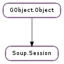

| Subclasses: | Soup.SessionAsync, Soup.SessionSync |
|---|
| static | new() |
| abort() | |
| add_feature(feature) | |
| add_feature_by_type(feature_type) | |
| cancel_message(msg, status_code) | |
| get_async_context() | |
| get_feature(feature_type) | |
| get_feature_for_message(feature_type, msg) | |
| get_features(feature_type) | |
| has_feature(feature_type) | |
| pause_message(msg) | |
| prefetch_dns(hostname, cancellable, callback, *user_data) | |
| prepare_for_uri(uri) | |
| queue_message(msg, callback, *user_data) | |
| redirect_message(msg) | |
| remove_feature(feature) | |
| remove_feature_by_type(feature_type) | |
| request(uri_string) | |
| request_http(method, uri_string) | |
| request_http_uri(method, uri) | |
| request_uri(uri) | |
| requeue_message(msg) | |
| send(msg, cancellable) | |
| send_async(msg, cancellable, callback, *user_data) | |
| send_finish(result) | |
| send_message(msg) | |
| unpause_message(msg) | |
| would_redirect(msg) |
| Name | Type | Flags | Description |
|---|---|---|---|
| accept-language | str | r/w | Accept-Language string |
| accept-language-auto | bool | r/w | Accept-Language automatic mode |
| async-context | int | r/w/c | The GLib.MainContext to dispatch async I/O in |
| http-aliases | list | r/w | URI schemes that are considered aliases for ‘http’ |
| https-aliases | list | r/w | URI schemes that are considered aliases for ‘https’ |
| idle-timeout | int | r/w | Connection lifetime when idle |
| local-address | Soup.Address | r/w/c | Address of local end of socket |
| max-conns | int | r/w | The maximum number of connections that the session can open at once |
| max-conns-per-host | int | r/w | The maximum number of connections that the session can open at once to a given host |
| proxy-resolver | Gio.ProxyResolver | r/w | The Gio.ProxyResolver to use for this session |
| proxy-uri | Soup.URI | r/w | The HTTP Proxy to use for this session |
| ssl-ca-file | str | r/w | File containing SSL CA certificates |
| ssl-strict | bool | r/w | Whether certificate errors should be considered a connection error |
| ssl-use-system-ca-file | bool | r/w | Use the system certificate database |
| timeout | int | r/w | Value in seconds to timeout a blocking I/O |
| tls-database | Gio.TlsDatabase | r/w | TLS database to use |
| use-ntlm | bool | r/w | Whether or not to use NTLM authentication |
| use-thread-context | bool | r/w | Whether to use thread-default main contexts |
| user-agent | str | r/w | User-Agent string |
| Name | Parameters | Return | Description |
|---|---|---|---|
| authenticate | Soup.Message, Soup.Auth, bool | Emitted when the session requires authentication. If credentials are available call Soup.Auth.authenticate () on auth. If these credentials fail, the signal will be emitted again, with retrying set to True, which will continue until you return without calling Soup.Auth.authenticate () on auth. Note that this may be emitted before msg ‘s body has been fully read. If you call Soup.Session.pause_message () on msg before returning, then you can authenticate auth asynchronously (as long as you GObject.Object.ref () it to make sure it doesn’t get destroyed), and then unpause msg when you are ready for it to continue. | |
| connection-created | GObject.Object | Emitted when a new connection is created. This is an internal signal intended only to be used for debugging purposes, and may go away in the future. | |
| request-queued | Soup.Message | Emitted when a request is queued on session. (Note that “queued” doesn’t just mean Soup.Session.queue_message (); Soup.Session.send_message () implicitly queues the message as well.) When sending a request, first Soup.Session ::request-queued is emitted, indicating that the session has become aware of the request. Once a connection is available to send the request on, the session emits Soup.Session ::request-started. Then, various Soup.Message signals are emitted as the message is processed. If the message is requeued, it will emit Soup.Message ::restarted, which will then be followed by another Soup.Session ::request-started and another set of Soup.Message signals when the message is re-sent. Eventually, the message will emit Soup.Message ::finished. Normally, this signals the completion of message processing. However, it is possible that the application will requeue the message from the “finished” handler (or equivalently, from the Soup.Session.queue_message () callback). In that case, the process will loop back to Soup.Session ::request-started. Eventually, a message will reach “finished” and not be requeued. At that point, the session will emit Soup.Session ::request-unqueued to indicate that it is done with the message. To sum up: Soup.Session ::request-queued and Soup.Session ::request-unqueued are guaranteed to be emitted exactly once, but Soup.Session ::request-started and Soup.Message ::finished (and all of the other Soup.Message signals) may be invoked multiple times for a given message. | |
| request-started | Soup.Message, Soup.Socket | Emitted just before a request is sent. See Soup.Session ::request-queued for a detailed description of the message lifecycle within a session. | |
| request-unqueued | Soup.Message | Emitted when a request is removed from session ‘s queue, indicating that session is done with it. See Soup.Session ::request-queued for a detailed description of the message lifecycle within a session. | |
| tunneling | GObject.Object | Emitted when an SSL tunnel is being created on a proxy connection. This is an internal signal intended only to be used for debugging purposes, and may go away in the future. |
| Name | Type | Access |
|---|---|---|
| parent | GObject.Object | r |
Bases: GObject.Object
| Returns: | the new session. |
|---|---|
| Return type: | Soup.Session |
Creates a Soup.Session with the default options.
Cancels all pending requests in session and closes all idle persistent connections.
The message cancellation has the same semantics as with Soup.Session.cancel_message (); asynchronous requests on a Soup.SessionAsync will have their callback called before Soup.Session.abort () returns. Requests on a plain Soup.Session will not.
| Parameters: | feature (Soup.SessionFeature) – an object that implements Soup.SessionFeature |
|---|
Adds feature ‘s functionality to session. You can also add a feature to the session at construct time by using the Soup.SESSION_ADD_FEATURE property.
Note that a Soup.ContentDecoder is added to the session by default (unless you are using one of the deprecated session subclasses).
| Parameters: | feature_type (GObject.GType) – a GLib.Type |
|---|
If feature_type is the type of a class that implements Soup.SessionFeature, this creates a new feature of that type and adds it to session as with Soup.Session.add_feature (). You can use this when you don’t need to customize the new feature in any way.
If feature_type is not a Soup.SessionFeature type, this gives each existing feature on session the chance to accept feature_type as a “subfeature”. This can be used to add new Soup.Auth or Soup.Request types, for instance.
You can also add a feature to the session at construct time by using the Soup.SESSION_ADD_FEATURE_BY_TYPE property.
Note that a Soup.ContentDecoder is added to the session by default (unless you are using one of the deprecated session subclasses).
| Parameters: |
|
|---|
Causes session to immediately finish processing msg (regardless of its current state) with a final status_code of status_code. You may call this at any time after handing msg off to session ; if session has started sending the request but has not yet received the complete response, then it will close the request’s connection. Note that with requests that have side effects (eg, POST, PUT, DELETE) it is possible that you might cancel the request after the server acts on it, but before it returns a response, leaving the remote resource in an unknown state.
If the message is cancelled while its response body is being read, then the response body in msg will be left partially-filled-in. The response headers, on the other hand, will always be either empty or complete.
Beware that with the deprecated Soup.SessionAsync, messages queued with Soup.Session.queue_message () will have their callbacks invoked before Soup.Session.cancel_message () returns. The plain Soup.Session does not have this behavior; cancelling an asynchronous message will merely queue its callback to be run after returning to the main loop.
| Returns: | session ‘s GLib.MainContext, which may be None |
|---|---|
| Return type: | GLib.MainContext |
Gets session ‘s Soup.Session :async-context. This does not add a ref to the context, so you will need to ref it yourself if you want it to outlive its session.
For a modern Soup.Session, this will always just return the thread-default GLib.MainContext, and so is not especially useful.
| Parameters: | feature_type (GObject.GType) – the GLib.Type of the feature to get |
|---|---|
| Returns: | a Soup.SessionFeature, or None. The feature is owned by session. |
| Return type: | Soup.SessionFeature |
Gets the first feature in session of type feature_type. For features where there may be more than one feature of a given type, use Soup.Session.get_features ().
| Parameters: |
|
|---|---|
| Returns: | a Soup.SessionFeature, or None. The feature is owned by session. |
| Return type: |
Gets the first feature in session of type feature_type, provided that it is not disabled for msg. As with Soup.Session.get_feature (), this should only be used for features where feature_type is only expected to match a single feature. In particular, if there are two matching features, and the first is disabled on msg, and the second is not, then this will return None, not the second feature.
| Parameters: | feature_type (GObject.GType) – the GLib.Type of the class of features to get |
|---|---|
| Returns: | a list of features. You must free the list, but not its contents |
| Return type: | [Soup.SessionFeature] |
Generates a list of session ‘s features of type feature_type. (If you want to see all features, you can pass %SOUP_TYPE_SESSION_FEATURE for feature_type.)
| Parameters: | feature_type (GObject.GType) – the GLib.Type of the class of features to check for |
|---|---|
| Returns: | True or False |
| Return type: | bool |
Tests if session has at a feature of type feature_type (which can be the type of either a Soup.SessionFeature, or else a subtype of some class managed by another feature, such as Soup.Auth or Soup.Request ).
| Parameters: | msg (Soup.Message) – a Soup.Message currently running on session |
|---|
Pauses HTTP I/O on msg. Call Soup.Session.unpause_message () to resume I/O.
This may only be called for asynchronous messages (those sent on a Soup.SessionAsync or using Soup.Session.queue_message ()).
| Parameters: |
|
|---|
Tells session that an URI from the given hostname may be requested shortly, and so the session can try to prepare by resolving the domain name in advance, in order to work more quickly once the URI is actually requested.
If cancellable is non-None, it can be used to cancel the resolution. callback will still be invoked in this case, with a status of Soup.Status.CANCELLED.
| Parameters: | uri (Soup.URI) – a Soup.URI which may be required |
|---|
Tells session that uri may be requested shortly, and so the session can try to prepare (resolving the domain name, obtaining proxy address, etc.) in order to work more quickly once the URI is actually requested.
| Parameters: |
|
|---|
Queues the message msg for asynchronously sending the request and receiving a response in the current thread-default GLib.MainContext. If msg has been processed before, any resources related to the time it was last sent are freed.
Upon message completion, the callback specified in callback will be invoked. If after returning from this callback the message has not been requeued, msg will be unreffed.
(The behavior above applies to a plain Soup.Session ; if you are using Soup.SessionAsync or Soup.SessionSync, then the GLib.MainContext that is used depends on the settings of Soup.Session :async-context and Soup.Session :use-thread-context, and for Soup.SessionSync, the message will actually be sent and processed in another thread, with only the final callback occurring in the indicated GLib.MainContext.)
Contrast this method with Soup.Session.send_async (), which also asynchronously sends a message, but returns before reading the response body, and allows you to read the response via a Gio.InputStream.
| Parameters: | msg (Soup.Message) – a Soup.Message that has received a 3xx response |
|---|---|
| Returns: | True if a redirection was applied, False if not (eg, because there was no Location header, or it could not be parsed). |
| Return type: | bool |
Updates msg ‘s URI according to its status code and “Location” header, and requeues it on session. Use this when you have set Soup.MessageFlags.NO_REDIRECT on a message, but have decided to allow a particular redirection to occur, or if you want to allow a redirection that Soup.Session will not perform automatically (eg, redirecting a non-safe method such as DELETE).
If msg ‘s status code indicates that it should be retried as a GET request, then msg will be modified accordingly.
If msg has already been redirected too many times, this will cause it to fail with Soup.Status.TOO_MANY_REDIRECTS.
| Parameters: | feature (Soup.SessionFeature) – a feature that has previously been added to session |
|---|
Removes feature ‘s functionality from session.
| Parameters: | feature_type (GObject.GType) – a GLib.Type |
|---|
Removes all features of type feature_type (or any subclass of feature_type ) from session. You can also remove standard features from the session at construct time by using the Soup.SESSION_REMOVE_FEATURE_BY_TYPE property.
| Parameters: | uri_string (str) – a URI, in string form |
|---|---|
| Raises: | GLib.GError |
| Returns: | a new Soup.Request, or None on error. |
| Return type: | Soup.Request |
Creates a Soup.Request for retrieving uri_string.
| Parameters: | |
|---|---|
| Raises: | |
| Returns: | a new Soup.RequestHTTP, or None on error. |
| Return type: |
Creates a Soup.Request for retrieving uri_string, which must be an “http” or “https” URI (or another protocol listed in session ‘s Soup.Session :http-aliases or Soup.Session :https-aliases ).
| Parameters: | |
|---|---|
| Raises: | |
| Returns: | a new Soup.RequestHTTP, or None on error. |
| Return type: |
Creates a Soup.Request for retrieving uri, which must be an “http” or “https” URI (or another protocol listed in session ‘s Soup.Session :http-aliases or Soup.Session :https-aliases ).
| Parameters: | uri (Soup.URI) – a Soup.URI representing the URI to retrieve |
|---|---|
| Raises: | GLib.GError |
| Returns: | a new Soup.Request, or None on error. |
| Return type: | Soup.Request |
Creates a Soup.Request for retrieving uri.
| Parameters: | msg (Soup.Message) – the message to requeue |
|---|
This causes msg to be placed back on the queue to be attempted again.
| Parameters: |
|
|---|---|
| Raises: | |
| Returns: | a Gio.InputStream for reading the response body, or None on error. |
| Return type: |
Synchronously sends msg and waits for the beginning of a response. On success, a Gio.InputStream will be returned which you can use to read the response body. (“Success” here means only that an HTTP response was received and understood; it does not necessarily mean that a 2xx class status code was received.)
If non-None, cancellable can be used to cancel the request; Soup.Session.send () will return a Gio.IOErrorEnum.CANCELLED error. Note that with requests that have side effects (eg, POST, PUT, DELETE) it is possible that you might cancel the request after the server acts on it, but before it returns a response, leaving the remote resource in an unknown state.
If msg is requeued due to a redirect or authentication, the initial (3xx/401/407) response body will be suppressed, and Soup.Session.send () will only return once a final response has been received.
Contrast this method with Soup.Session.send_message (), which also synchronously sends a Soup.Message, but doesn’t return until the response has been completely read.
(Note that this method cannot be called on the deprecated Soup.SessionAsync subclass.)
| Parameters: |
|
|---|
Asynchronously sends msg and waits for the beginning of a response. When callback is called, then either msg has been sent, and its response headers received, or else an error has occurred. Call Soup.Session.send_finish () to get a Gio.InputStream for reading the response body.
See Soup.Session.send () for more details on the general semantics.
Contrast this method with Soup.Session.queue_message (), which also asynchronously sends a Soup.Message, but doesn’t invoke its callback until the response has been completely read.
(Note that this method cannot be called on the deprecated Soup.SessionSync subclass, and can only be called on Soup.SessionAsync if you have set the Soup.Session :use-thread-context property.)
| Parameters: | result (Gio.AsyncResult) – the Gio.AsyncResult passed to your callback |
|---|---|
| Raises: | GLib.GError |
| Returns: | a Gio.InputStream for reading the response body, or None on error. |
| Return type: | Gio.InputStream |
Gets the response to a Soup.Session.send_async () call and (if successful), returns a Gio.InputStream that can be used to read the response body.
| Parameters: | msg (Soup.Message) – the message to send |
|---|---|
| Returns: | the HTTP status code of the response |
| Return type: | int |
Synchronously send msg. This call will not return until the transfer is finished successfully or there is an unrecoverable error.
Unlike with Soup.Session.queue_message (), msg is not freed upon return.
(Note that if you call this method on a Soup.SessionAsync, it will still use asynchronous I/O internally, running the glib main loop to process the message, which may also cause other events to be processed.)
Contrast this method with Soup.Session.send (), which also synchronously sends a message, but returns before reading the response body, and allows you to read the response via a Gio.InputStream.
| Parameters: | msg (Soup.Message) – a Soup.Message currently running on session |
|---|
Resumes HTTP I/O on msg. Use this to resume after calling Soup.Session.pause_message ().
If msg is being sent via blocking I/O, this will resume reading or writing immediately. If msg is using non-blocking I/O, then reading or writing won’t resume until you return to the main loop.
This may only be called for asynchronous messages (those sent on a Soup.SessionAsync or using Soup.Session.queue_message ()).
| Parameters: | msg (Soup.Message) – a Soup.Message that has response headers |
|---|---|
| Returns: | whether msg would be redirected |
| Return type: | bool |
Checks if msg contains a response that would cause session to redirect it to a new URL (ignoring msg ‘s Soup.MessageFlags.NO_REDIRECT flag, and the number of times it has already been redirected).